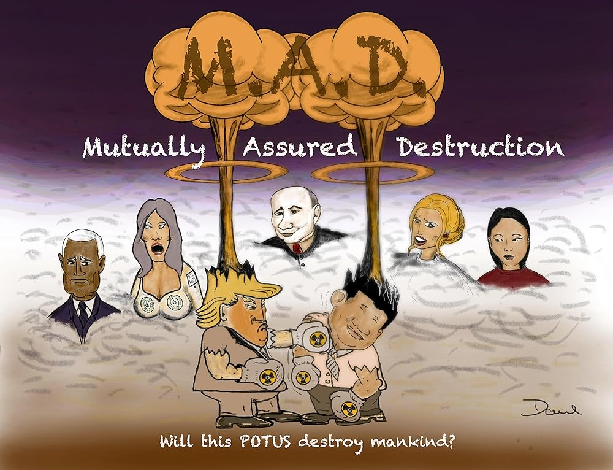

Computers are used to guide intercontinental ballistic missiles. They go boom. Therefore people don't want to start wars against people with intercontinental ballistic missiles. Consequently, the existence of intercontinental ballistic missiles leads to peace in our time. Ergo, computers give us peace on earth.
This concept is known as mutually assured destruction or MAD.
computers = peace
Thank you for coming to my TED talk